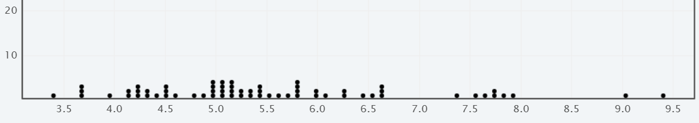
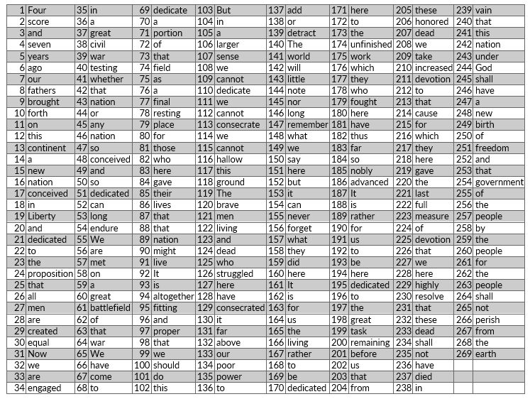
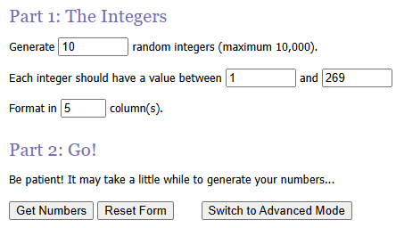
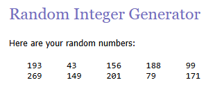
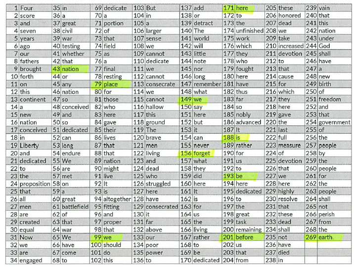

Recognize the type sampling methods employed in a study.
Recall that the population is the set of all subjects for the study, while a sample is a group or subset selected from the population. It is often difficult or too expensive to examine the whole population for a study, thus we use a sample to help us draw conclusions about the population. When we choose a sample, we want it to be as similar to the population as possible. We are going to simulate several sampling methods using Gettysburg’s Address as the population.
President Abraham Lincoln delivered one of the most famous speeches in United States history at the dedication of the Gettysburg National Cemetery on November 19, 1863. After the featured speaker spoke for two hours, Lincoln delivered his 269-word message in approximately two minutes. Our goal is to estimate the average word length in Abraham Lincoln’s Gettysburg Address by selecting a sample of ten words. The entire text of Lincoln’s Gettysburg Address is given below.
Four score and seven years ago our fathers brought forth, on this continent, a new nation, conceived in Liberty, and dedicated to the proposition that all men are created equal. Now we are engaged in a great civil war, testing whether that nation, or any nation so conceived and so dedicated, can long endure. We are met on a great battlefield of that war. We have come to dedicate a portion of that field, as a final resting place for those who here gave their lives that that nation might live. It is altogether fitting and proper that we should do this. But, in a larger sense, we cannot dedicate—we cannot consecrate—we cannot hallow—this ground. The brave men, living and dead, who struggled here, have consecrated it, far above our poor power to add or detract. The world will little note, nor long remember what we say here, but it can never forget what they did here. It is for us the living, rather, to be dedicated here to the unfinished work which they who fought here have thus far so nobly advanced. It is rather for us to be here dedicated to the great task remaining before us—that from these honored dead we take increased devotion to that cause for which they here gave the last full measure of devotion—that we here highly resolve that these dead shall not have died in vain—that this nation, under God, shall have a new birth of freedom—and that government of the people, by the people, for the people, shall not perish from the earth.
Step 1: Your task is to select a sample of 10 words to estimate the average length of words in his speech. Pick words that appear to be representative of the population of all the words. If you print the address, you can circle the ten words you choose.
Step 2: Find the lengths (number of letters) for each of the 10 words you selected.
Step 3: Calculate the average number of letters for the 10 words in your sample. Take the total number of letters and divide by the 10 words for the average.
Checkpoint1.2.1.Your average word length.
Which best describes your average value for the average word length?
Between 3 and 6 letters per word.
That is a reasonable estimate.
Less than 3 letters per word.
This estimate is a bit low, there are a lot of large words not included in your sample.
More than 6 letters per word.
This estimate is a bit high, you likely included a lot of the larger words and did not include some of the smaller words
The image below is a class distribution of the average number of letters for the Gettysburg Address by circling ten words. Each dot represents the average value for a student. There were 64 student samples taken. We can see the values range from 3.4 to 9.4 with the center around 5.5 letters per word, thus this will be our predicted value for the typical word length. But it turns out, we are often biased in the words we select. Some students selected bigger words to be representative, others selected more smaller words. Did you notice how many two and three letter words there were? Were you biased in your sampling selection?

Figure1.2.2.Image of Average Word Length from Gettysburg Address
Now let’s investigate using a more random approach in selecting the words for a better estimate of the population average.
Randomly choose ten numbers between 1 and 269 and record them. Find the corresponding word in Lincoln’s Gettysburg Address and find the average word length for your new sample.

Figure1.2.3.Image of Gettysburg Address numbered
You can also use technology to find the random numbers. Try the link for a random number generator at https://www.random.org/
Go midway down the page to Numbers and select Integer Generator. Generate 10 random integers between 1 and 269. Click on Get Numbers.

Figure1.2.4.Image RandomOrg menu
The image below is a sample of ten randomly selected numbers using the applet.

Figure1.2.5.Image Sample of random numbers
Matching these numbers to the corresponding word in Gettysburg Address gives the average of 3.9 letters per word, which is closer to the population mean of 4.29 letters per word. We will look at the distributions again later.

Figure1.2.6.Sample of Gettysburg Address wods
Sampling bias occurs when the method of selecting a sample causes the sample to differ from the population in some relevant way. If sampling bias exists, we cannot trust generalizations from the sample to the population. So, we need a better method for predicting the typical or average value.
There are many sampling techniques, we will look at some of the more common sampling methods in statistics. We will simulate some of these methods in class with the Gettysburg Address.
Simple Random Sample is a method in which every element in the population has an equal chance of being selected for the sample. It’s like putting all the names of the students in class in a hat and randomly drawing ten names.
Systematic Sampling is a method that useful when the population is already ordered in some way and every kth item is selected. While standing in line at a game, every 10th person gets a 10% off coupon. There is a system in how the sample is collected.
Stratified Sampling occurs when the population is divided into natural groups or strata. People are randomly polled in each group and the number of people polled in each group is determined by the ratio of the group to size of the total population. When sampling for how students study, the sample should consist of some freshman, sophomore, juniors, and seniors. If there are twice as many freshman as seniors, then the sample would also have twice as many freshman.
Cluster Sampling is a method that randomly selects a naturally occurring group or cluster and all in that cluster are selected. This is common in education where all of one class is selected to participate in the study. It is helpful to think of a cluster of grapes: you take the whole cluster rather than just grabbing a couple of grapes.
Convenience Sampling occurs when a group of subjects are convenient to sample. Around election time, people stand outside grocery stores to gather an easy sample of people to ask who they will vote for.
Exercise: Identify the type of sampling method described for each scenario:
Match the type of sampling method described with the appropriate scenario. Drag the sampling method name to the description.
Systematic Sampling
Alfred is conducting a survey to determine who students will vote for as their next Student Affairs President. He decided to survey students in a dormitory and knocks on every 10th door
Simple Random Sample
Betty is conducting a survey to determine if students like the new plus/minus grading system. She randomly draws 100 bear numbers from a list and surveys those students.
Stratified Sampling
Charlotte is conducting a survey to determine if students make use of the campus recreation center. She polls 100 freshman, 100 sophomores, 100 juniors, and 100 seniors on how frequently they use the recreation center.
Cluster Sampling
Eugene is conducting a survey to determine if the dorms should have more study break sessions during finals week. He asks everyone on the 5th floor of Turner their opinion.
Convenience Sampling
Douglas is conducting a survey to determine if the University Center should open up a McDonalds, Wendy’s, or Burger King. He stands outside the UC and surveys students as they enter the building.